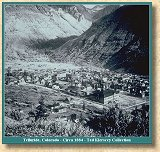
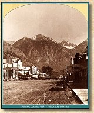

|
 The first white men to inhabit the area around Telluride came to work placer gold claims in 1874. These claims were located at the eastern end of San Miguel Park. One of the earliest claims was called Pandora, and the name of the area has stayed the same ever since. Soon after the initial placer claims were laid out, even more valuable claims of gold and silver were discovered in the mountain basins above Pandora. The location was one of the most spectacular in Colorado. Pandora is located at the foot of Ajax Mountain, which rises almost vertically from the valley floor. East of Ajax is Ingram Peak, which is framed by two of the most beautiful waterfalls in the United States, Bridal Veil Falls and Ingram Falls. The infamous Black Bear Road switches back up the face of Ingram Peak from the valley floor in Pandora. |
| Another mining camp grew a few miles down the San Miguel from Pandora in the late 1870's. This community was originally known as Columbia. The town was incorporated in 1878. A Post Office was established in Columbia in 1880 as "Telluride." There is no definitive answer to why the Postmaster General chose to grant Columbia it's post office under the name Telluride, and for some time the locals continued to refer to their town as Columbia. After a number of years, Telluride became the accepted name. Today the name Columbia remains only as the street one block north of Telluride's main street, Colorado Avenue. |
| Otto Mears began construction of a series of toll roads on the Western Slope in the middle 1870's. By 1877 he had constructed a road from Montrose to Ouray. In 1880, Mears built the Dallas Divide Toll Road from Dallas, located on the Montrose to Ouray road near the present site of Ridgway, southwest over Dallas Divide, down Leopard Creek to Placerville. From Placerville the road followed the course of the San Miguel southeast to Telluride. This road would later become part of the right of way of Mears' Rio Grande Southern Railroad. |
| In 1883 San Miguel County was formed from part of Ouray County. Telluride became the county seat. The original county courthouse was completed in 1886. It lasted for a year until it burned down. The second courthouse fared much better. Constructed on the same plot and using many of the bricks from the original building, the courthouse still stands today on the corner of Colorado Avenue and Oak Street. |
| The first telegraph line into Telluride was constructed in 1888. It ran over Dallas Divide to the settlement of Dallas and connected there with the telegraph line connecting Montrose and Ouray. The telegraph line is presumed to have been laid along Otto Mears' Dallas Divide Toll Road. |
| The Upper San Miguel Mining District grew rapidly above Telluride, while the placer claims in Pandora were quickly played out. Most of the major operations were located in Marshall, Middle and Savage Basins. Large claims were laid out and extensive operations were built. The larger facilities included boardinghouses, offices, stores, machinery shops, and often small mills. Some of the mines had small hospitals. The mountain slopes were soon crisscrossed with tramways to bring the ore down to the massive mills that were constructed in Pandora. |
| There were a number of significant operations in the Upper San Miguel Mining District. Due to various business failures, reorganizations and consolidations, the ownership of these workings was often combined at various points in time. The original names for the mines and mills in the basins above Telluride are shown below. |
| Marshall Basin | Middle Basin | Savage Basin |
| Sheridan | Montana | Tomboy |
| Smuggler | Fortuna | Iona |
| Union | Columbia | |
| Mendota | Japan | |
| Cimarron | Argentine |
| Additional major operations in the area included the Mayflower Mine in Gray's Basin and the Bear Creek operation in Bear Creek Basin. |
| The Rio Grande Southern Railroad reached Telluride in 1891. Running along the grade of Otto Mears toll road, the Telluride branch left the mainline at Vance Junction, turned 180 degrees at the Ilium Loop and made the long climb up Keystone Hill before it broke out onto the floor of San Miguel Park. Although called the Telluride branch, the railroad continued to Pandora where a wye was located at the site of the large mills. The RGS served these mills and their successors until the end of operations in 1952. Railroad facilities at Telluride included a two stall engine house, a water tank, water column, section house and bunkhouse, a number of sidings and a handsome depot. The depot was restored a number of years ago and is now a micro brewery. |
| The location of mining operations high above Telluride made the extraction of ore an expensive proposition. With the coming of the railroad, transportation costs declined significantly. Supplies and transportation of refined ore out of the district became cheaper. For a brief period of time, profits in the district skyrocketed. |
|
 The repeal of the Sherman Silver Purchase Act in 1893 dealt an almost lethal blow to many of the mining communities in Colorado. In town after town, mines closed, workers were laid off and stores shut down. Thousands of residents left, never to return. Although Telluride did not escape serious difficulties as a result of the precipitous decline in the price of silver, the rich gold deposits in the region served to mitigate the effects of the Silver panic. Through the 1890's mines and mills in the area adapted to the change in the metals market by expanding their gold mining and milling capability. The eventual decline of mining in the area would be caused by long term market conditions and a tragic series of labor disputes. |
| Labor unrest was not unknown in the region before the Silver Panic. However, strikes were settled quickly and nonviolently. In the late 1890's, workers in the Colorado mines, like workers in many other industries of the time, began to question their working conditions and pay, and formed unions. In 1896 the local Telluride unions were granted a charter in the aggressive Western Federation of Miners. The WFM demanded closed shop contracts, which were not welcomed by the mine owners. Throughout Colorado mining labor disputes became violent. In Cripple Creek and Victor, the Florence and Cripple Creek RR depot was dynamited by union members. Telluride would suffer similar violence in the early 1900's. |
| In 1899 the Smuggler-Union Mining Company attempted to change the miner's pay system. Prior to the change, a miner was paid $3.00 a day. The Smuggler Union attempted to institute a system where a miner would be paid $3.00 to remove an amount of ore 6 feet high by 6 feet deep and as wide as the vein. Since the veins in the region were wide, it would take a miner longer than 8 hours to earn his $3.00. The miners went on strike on May 21, 1901. |
| After a six week long closure, the mining company hired scabs at $3.00 a day and reopened the mine. A few days later, over 200 striking miners carrying weapons approached the Bullion Tunnel and attempted to take over the property. In the resulting gunfire, at least one union member was shot and killed. |
| The union members prevailed and marched the scabs up and over Imogene Pass with orders not to return. During this march a number of scabs were beaten. After this incident an agreement was reached between the union and management where the miners were guaranteed $3.00 a day for 8 hours of work. With this agreement in hand the union returned to work. |
| The company continued to try to break the union. The manager of the Smuggler-Union, Arthur Collins, advertised for non-union workers to work in the mine in November of 1901. A day later an unknown assassin fired a shotgun through the window of Collin's office in Pandora. Collins died a few days later of his wounds. Collins was soon replaced by Bulkely Wells. A dedicated anti-unionist, Wells established a mine owners association. He would run the Smuggler-Union until 1924. |
| In September 1903 the Telluride mill workers went out on strike in sympathy with strikers in Cripple Creek. In November, the miners in the district went on strike when the Tomboy mill owner reopened his mill with non-union workers. Fearing a repetition of the 1901 violence, the mine owners appealed to Colorado Governor Peabody for state militia troops. |
| Peabody sent 500 men to Telluride on November 24, 1903. They arrived on a Rio Grande Southern train armed with a Gatling gun on a coal car in front of the engine. On January 3, 1904 Governor Peabody declared a state of martial law in the area. Meetings were banned, a curfew was established, and the bawdy houses and casinos were closed. The militia arrested over 100 union members and deported them out of town on the RGS. The mines and mills reopened with non-union workers. |
| As a result of these event, two attempts were made upon Governor Peabody's life. One bomb at the governor's mansion was set off by a delivery boy. The unlucky boy was killed. A second bomb failed to go off and was discovered years later. The bomber, a radical union activist from the Western Federation of Miners named George Orchard, had been responsible for the dynamiting of the Florence and Cripple Creek depot in Cripple Creek which cost the lives of 20 people. Orchard had previously killed Idaho Governor Frank Steunenberg. Orchard was later apprehended and extradited to Idaho for the murder of Governor Steunenberg. He was sentenced to life in prison for that crime. |
| The union received a court order ruling that their members had a right to return to Telluride. Upon their arrival on an RGS train, the militia (now under the local command of Bulkely Wells, the manager of the Smuggler-Union Mining Company) ran them out of town on the train they came in on. |
| One relic of this unfortunate time remains in the Telluride area. The small stone structure at the summit of Imogene Pass was erected as a guard tower for Colorado militiamen. The guards were stationed there to prevent union activists from reentering Telluride over Imogene Pass. Today this little building is still referred to as Fort Peabody, a somewhat sarcastic reference to the governor's role in breaking the union. |
| Martial law ended in June, 1904 and the Western Federation of Miners declared their strike over on November 29, 1904. The union had been broken, but isolated incidents of violence continued for years. In 1908 Bulkely Wells was the target of a bombing. Wells survived with minor injuries. |
| Both sides were guilty of excesses during this struggle. The militia and mining company owners engaged in blatant violations of worker's Constitutional rights. The unions were dominated by anarchists in their ranks who considered bombings and killings legitimate methods of persuasion. In the end, this strife exhausted both sides, and mining began a slow and steady decline in the Telluride district. |
| As the twentieth century progressed, Telluride became more and more a backwater town. Mining continued at a progressively slower and slower pace up until the late 1950's. The Ball Mill in Pandora operated until the late 1970's under the ownership of the Idorado Mining Company. The mill is still intact and maintained by a small crew, waiting for the day when gold market conditions change. |
| A number of abandoned mines were alleged to have been the site of stills during the Prohibition era. One can only wonder what the product was listed as on RGS manifests leaving town. With the abandonment of the RGS in 1952, there were no more manifests for anyone to be concerned with. Although the first rope tow for skiing opened in 1937, development was slow in coming. In the 1960's houses were selling for $1,000 and downtown lots could be purchased for $100. The 1970 census shows a population of less than 600 people living in Telluride. A few years later the opening of the Telluride Mountain Village would finally spur redevelopment of the town. |
| Telluride today is one of Colorado's premier ski resorts, and has been discovered by the beautiful people from the entertainment industry. High priced homes abound in the area, and the downtown has become totally yuppified. But it still has the mountains, the falls and the jeep trails. If you're in the area, stop for a beer at the depot and enjoy the views. Catch the RGS Goose on display. And like the union miners in 1904, get out of town quick. |

|
The Narrow Gauge Circle is written, maintained,and hosted by: Mark L. Evans Send Comments to:Mark L. Evans All original materials, text, and digital images Copyright © 1995-2014 Mark L. Evans. All rights reserved. Imitation is said to be the "sincerest" form of flattery.....Please don't flatter us without permission. |